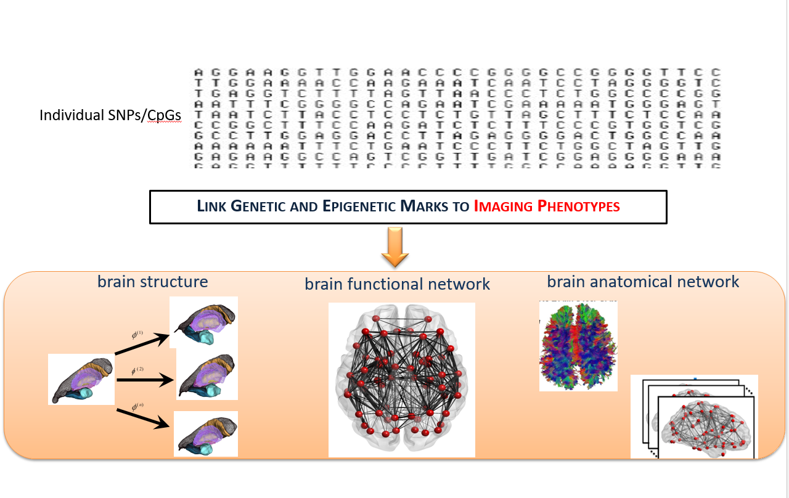
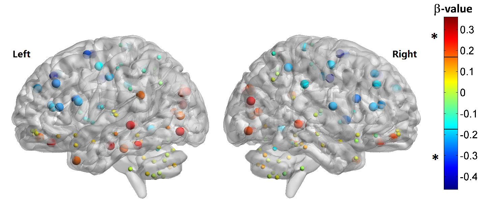
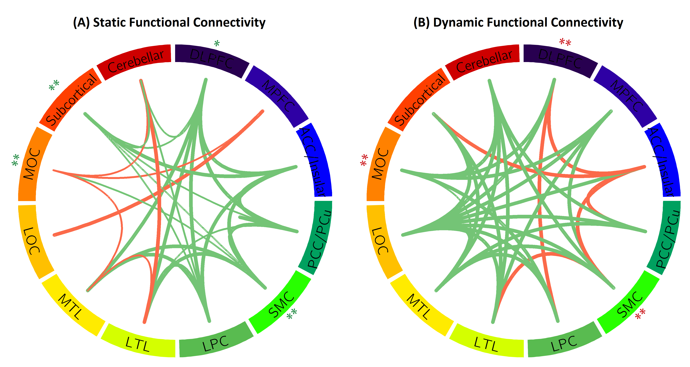
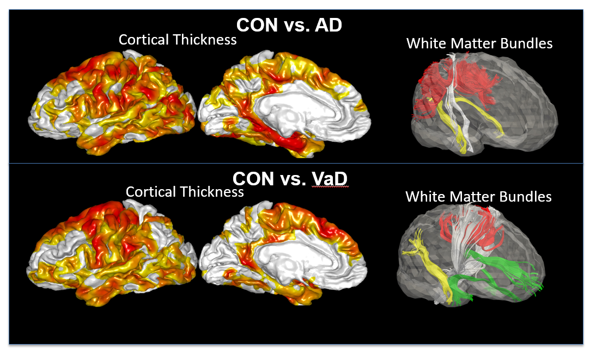

Brain Aging
Understanding aging is perhaps one of the most difficult endeavour in the history of medicine. The human brain, as a central computer that controls bodily functions and cognition, plays an important role in aging processes. Unfortunately, we are lack of knowledge on how to prevent and intervene brain aging.

Figure 1. Schematic of imaging genetics.
Our lab employ multi-modal MRI brain images to investigate brain aging in terms of : 1.morphological shapes and cortical thickness; 2.functional networks; 3.structural networks. Moreover, we develop computational analysis methods of complex and informative datasets comprising of neurodegenerative disease phenotypes, neuroimages, and genetic data to understand the origins of individual differences in aging.
1. A Posterior-to-Anterior Shift of Brain Functional Dynamics in Aging
Convergent evidence from task-based functional magnetic resonance imaging (fMRI) studies suggests a posterior-to-anterior shift as an adaptive compensatory scaffolding mechanism for aging. Our study aimed to investigate whether brain functional dynamics at rest follow the same scaffolding mechanism for aging using a large Chinese sample aged from 22 to 79 years old. We defined a probability of brain regions being hubs over a period of time to characterize functional hub dynamic, and defined variability of the functional connectivity to characterize dynamic functional connectivity using resting-state fMRI (rs-fMRI). Our results revealed that both functional hub dynamics (Figure 2) and dynamic functional connectivity posited an age-related posterior-to-anterior shift (Figure 3). Specifically, the posterior brain region showed attenuated dynamics while the anterior brain regions showed augmented dynamics in aging. Interestingly, our analysis further indicated that the age-related episodic memory decline was associated with the age-related decrease in the brain functional dynamics of the posterior regions. Hence, these findings provided a new dimension to view the scaffolding mechanism for aging based on the brain functional dynamics.

Figure 2. Age effects on functional hub probability. Nodes are located according to their centroid stereotaxic coordinated. The color of each node represents its standardized β-value from the linear regression analysis, and the range of β-value is from -0.46 to 0.36. The nodes revealed significant age effects are shown in bigger size (p<0.05, FDR corrected).

Figure 3. Age effects on functional connectivity. Each line indicates significant age effect on static (A) and dynamic (B) functional connectivity. Each circular represents twelve brain regions and significant age-related increasing (red lines) and decreasing (green lines) connections between regions. The width of the line indicates p-values. The thicker the line is, the smaller p-value is. * p<0.05, FDR corrected and ** p<0.01, FDR corrected.
Reference
[1] Zhang, Han, Annie Lee, and Anqi Qiu. "A posterior-to-anterior shift of brain functional dynamics in aging." Brain Structure and Function (2017): 1-12.
2.Abnormalities of Cortical Thickness, Subcortical Shapes, and White Matter Integrity in Subcortical Vascular Cognitive Impairment
Subcortical vascular cognitive impairment (sVCI) is caused by lacunar infarcts or extensive and/or diffuse lesions in the white matter that may disrupt the white matter circuitry connecting cortical and subcortical regions and result in the degeneration of neurons in these regions. This study employed structural magnetic resonance imaging (MRI) and high angular resolution diffusion imaging (HARDI) techniques and examined cortical thickness, subcortical shapes, and white matter integrity in mild vascular cognitive impairment no dementia (VCIND Mild) and moderate-to-severe VCI (MSVCI). Our study found that compared to controls, VCIND Mild and MSVCI showed thinner cortex predominantly in the frontal cortex (Figure ). The cortex in MSVCI was thinner in the parietal and lateral temporal cortices than that in VCIND Mild. Compared to controls, VCIND Mild and MSVCI showed increased mean diffusivity in the white matter, while decreased generalized fractional anisotropy (GFA) was only found in the MSVCI subjects. The major axonal bundles involved in the white matter abnormalities were mainly towards the frontal regions, including the internal capsule/corona radiata, uncinate fasciculus, and anterior section of the inferior fronto-occipital fasciculus, and were anatomically connected to the affected cortical and subcortical structures. Our findings suggest that abnormalities in cortical, subcortical and white matter morphology in sVCI occur in anatomically connected structures, and that abnormalities progress along a similar trajectory from the mild to moderate and severe conditions.

Figure 4. Comparisons in cortical thickness and white matter bundles between controls and patients with Alzheimer’s disease (AD, top row), as well as between controls and patients with vascular dementia (VaD, bottom row).
Reference
[1] Jamie Yu Jin Thong, Jia Du, Nagulan Ratnarajah, Yanhong Dong, Hock Wei Soon, Monica Saini, Ming Zhen Tan, Anh Tuan Ta, Christopher Chen, Anqi Qiu*, “Abnormalities of Cortical Thickness, Subcortical Shapes, and White Matter Integrity in Subcortical Vascular Cognitive Impairment”, Human Brain Mapping, 35(5):2320-2332, 2014. (COVER)